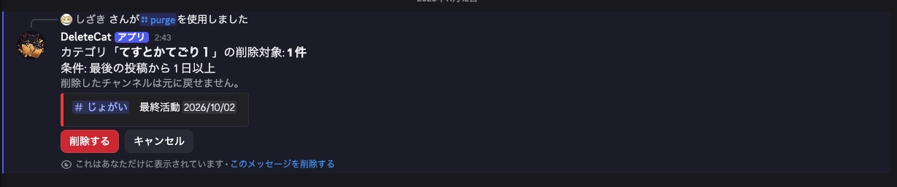

できること
カテゴリごとまとめて削除
カテゴリ直下のテキスト・アナウンスチャンネルを一度に削除します。ボイス・フォーラムチャンネルとカテゴリ自体は残します。
消す前に一覧で確認
どちらの版も、まず削除対象の一覧を出します。確かめてからでないと削除しません。
しばらく使っていないものだけ
最後の投稿から決めた日数以上たったチャンネルだけを対象にできます。
残すものを指定
名前や ID で指定したチャンネルは、削除対象から外せます。
実際の画面

/purge を実行したところ。最後の投稿から1日以上たったチャンネルを対象にしています。一覧は実行した人にだけ見え、「削除する」を押すまで何も消えません。2つの版
Cloudflare 版
Discord で /purge
サーバーの管理者が、Discord 上からコマンドで気軽に使えます。
- Cloudflare Workers の無料プランで動きます
- 確認の一覧は実行した人にだけ見えます
- 削除は監査ログに残ります
Python 版
手元の PC からコマンドで
一度きりの整理や、決まった日の定期実行に向いています。
- Python 3.10 以上の標準機能だけで動きます
- ふつうに実行すると一覧を出すだけで、何も消えません
--yesを付けたときだけ削除します
削除したチャンネルは元に戻せません。一覧をよく確かめてから削除してください。
安全性について
- Bot は自分で作って、自分のサーバーにだけ招待します。Bot のトークンは自分の Cloudflare か PC の中にだけ保存し、作者を含め、ほかの人には送られません。
- /purge コマンドが見えるのは「チャンネルの管理」権限を持つメンバーだけです。削除できるのも、実行した人自身が管理できるチャンネルだけです。
- Bot に必要な権限は「チャンネルを見る」と「チャンネルの管理」の2つだけです。メッセージの中身は読みません。
はじめかた
- Discord Developer Portal で自分の Bot を作り、トークンを控える
- 「チャンネルを見る」「チャンネルの管理」の権限を付けて、サーバーに招待する
- 使う版を選んで設置する
- Cloudflare 版：Cloudflare にデプロイして、Discord にコマンドを登録する
- Python 版：設定ファイルにトークンとサーバー・カテゴリの ID を書く
- まず一覧だけ出して、対象が合っているか確かめてから削除する
質問・不具合の報告
分かりにくいところや動かないところがあれば、GitHub の Issue で気軽に教えてください。